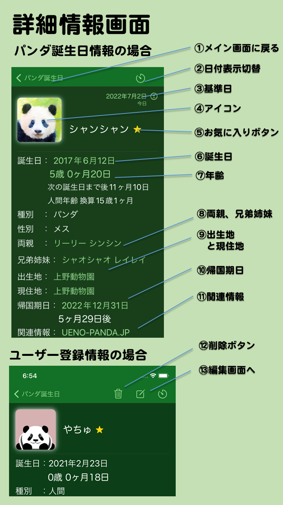

- 詳細情報画面とは
- メイン画面で情報欄をタップして移動してくる画面です。メイン画面で選んだパンダやユーザー登録情報の詳細情報を表示します。パンダや情報の種類によって表示される項目も変わります。
- 画面の説明
- ①メイン画面に戻る
- メイン画面に戻ります。
- ②日付表示切替
- このページの誕生日や来日日、帰国期日の表示形式を切り替えます。
- ③基準日
- 年齢計算の基準日を表示します。初期値は今日です。タップすると任意の日を入力することができます。
- ± をタップすると基準日のオフセット（差分）を入力できます。
- ④アイコン
- タップするとアイコンの変更ができます。
- アイコン右下の✖️印をタップするとそのアイコンを削除できます。
- 画像追加を選ぶとアイコンを追加できます。登録済みアイコンから選ぶか、写真アルバムから選ぶことができます。
- パンダ情報では、プリセット画像に戻すを選ぶことでデフォルトの画像に戻すことができます。
- ⑤お気に入りボタン
- タップするとお気に入りにします。もう一度押すとお気に入りを解除します。
- ⑥誕生日
- 誕生日を表示します。情報がイベントの場合はイベント日を表示します。
タップすると誕生日を基準日にセットできます。これによってこのパンダが生まれた時に両親や兄弟が何歳だったかとかがわかります。
- ⑦年齢
- 年齢、人間年齢に換算した年齢を表示します。イベントの場合はイベントまでもしくはイベントからの日数を表示します。
日付表示切り替えを押すことで日数の表示形式を切り換えられます。
- 年齢をタップすると、任意の年齢の誕生日を基準日を設定することができます。
- ⑧両親や兄弟姉妹、子供
- 両親の名前を表示します。
登録されている名前の場合は名前をタップするとその親の詳細情報画面を表示します。兄弟姉妹や子供がいる場合はその名前を表示し、登録されている場合は名前をタップすると詳細情報画面を表示できます。
- ⑨出生地と現住地
- 生まれた場所、今いる動物園を示します。イベントの場合はイベントの場所を表示します。
パンダの情報ならタップするとそれぞれの場所の情報があるサイトをブラウザで開きます。
- ⑩帰国期日
- 帰国期日が決まっている場合にそれを表示します。中国から来日したパンダは来日日も表示します。
タップするとそれぞれ基準日に設定できます。それによって帰国する時には何歳になっているかとか、来日した時は何歳だったかとかがわかります。
- ⑪関連情報
- このパンダに関連する情報サイトへのリンクです。タップするとそれぞれのサイトをブラウザで開きます。
- ⑫削除ボタン
- タップすると該当の情報を削除できます。ユーザー登録情報にのみ表示されます。
- ⑬編集画面へ
- タップすると編集画面に移動します。ユーザー登録情報にのみ表示されます。